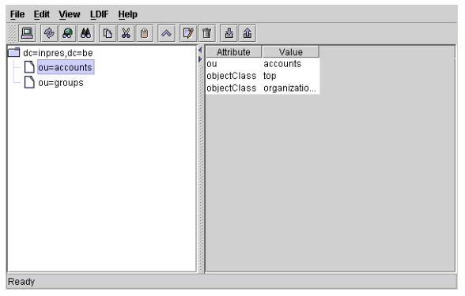

Cette section s’attarde quelque peu sur les différents outils disponibles pour administrer le serveur ainsi que les paramètres de configuration permettant d’optimiser le serveur OpenLDAP.
Un client graphique développé en Java par HP est fournit avec le package OpenLDAP de Tru64. Cet outil, extérieur au projet OpenLDAP, permet une administration de l’annuaire plus confortable que les utilitaires en ligne de commande (ldapsearch, ldapadd...). Le fichier binaire ldapbrowser.jar et le script de lancement ldapbrowser sont placés sous le répertoire /usr/internet/openldap/admin.
Un autre outil graphique, également développé en Java, est disponible gratuitement à l’adresse http://www-unix.mcs.anl.gov/~gawor/ldap/. L’image suivante montre la fenêtre principale de l’application avec l’arbre LDAP à gauche et le détail de l’entrée sélectionnée dans sa partie droite.

Fig. 2.7 – Le client graphique LDAP Browser/Editor
Des outils en ligne de commande, fournis avec OpenLDAP, permettent de travailler directement sur les fichiers de l’annuaire. La commande slapcat permet d’exporter une partie ou tout l’annuaire au format LDIF et ainsi réaliser des sauvegardes partielles ou complètes de l’annuaire. L’exemple suivant montre comment utiliser slapadd pour sauvegarder une partie de l’annuaire dans un fichier.
slapcat -b "dc=inpres,dc=be" -s "ou=People,dc=inpres,dc=be" -l db.ldif
La commande slapcat va lire les entrées de la base de données dont le suffixe est dc=inpres,dc=be et copier tout sous l’arbre dont la racine est indiquée par l’argument -s dans le fichier db.ldif. Pour restaurer l’annuaire, la commande slapadd peut être utilisée pour importer une sauvegarde effectuée avec slapcat. L’exemple suivant importe les entrées lues à partir du fichier db.ldif dans l’annuaire dont le suffix est dc=inpres,dc=be.
slapadd -b dc=inpres,dc=be -l db.ldif
Comme pour les bases de données relationnelles, il est possible de créer des index afin d’optimiser les opérations de recherche dans l’annuaire. OpenLDAP supporte quatres types d’index.
La directive index spécifie l’index a gérer pour un attribut donné. Si une liste d’attri- buts (séparés par une virgule) est donnée, l’index par défaut est créé pour ces attributs. Par exemple
index uid
index cn,sn pres,eq
La première ligne demande à OpenLDAP de gérer les index par défaut (pres, eq) pour l’attribut uid. La deuxième ligne va créer des index de type pres et eq pour les attributs cn (common-name) et sn (surname). Par défaut, aucun index n’est créé. Cependant, la documentation de OpenLDAP conseille la création d’un index d’égalité (eq) sur l’attribut objectClass. En effet, cet attribut est sollicité par la plupart des recherches.
index objectClass eq
En plus des index, le serveur peut gérer un cache mémoire afin de diminuer le nombre d’entrées/sorties disque (toujours plus lentes que les accès mémoire). Le pa- ramètre cachesize permet de préciser le nombre d’entrées à conserver dans le cache mémoire.
cachesize 3500
L’exemple précédent configure le serveur pour garder 3000 entrées en mémoire.